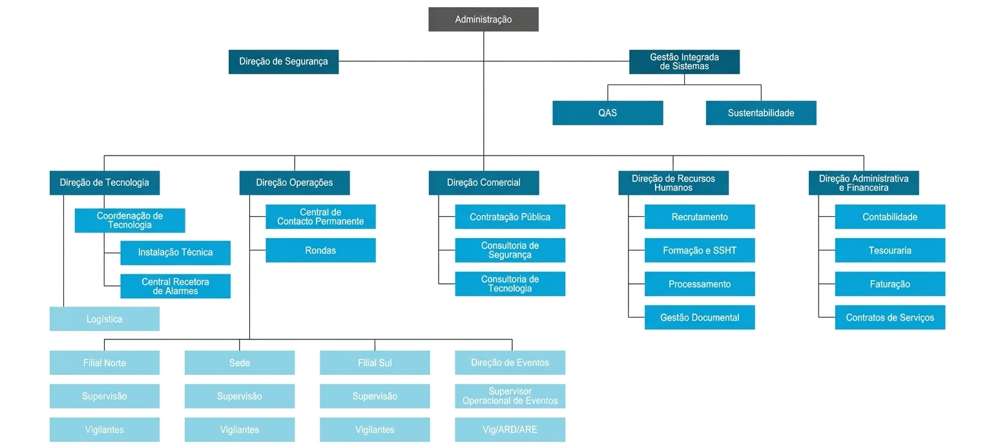
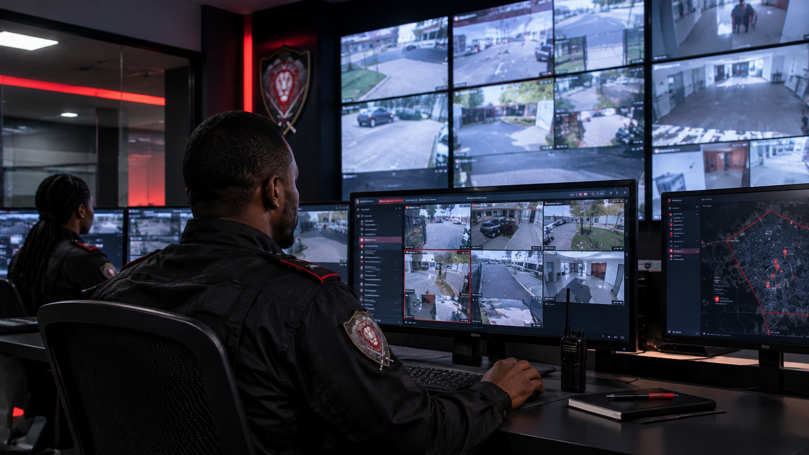
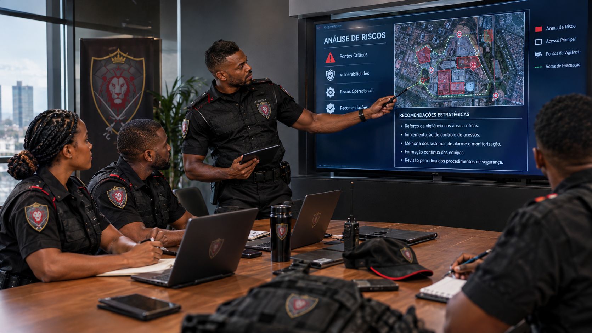

01
Vigilância
Vigilância humana, vigilância eletrónica e consultoria de segurança para apoiar a proteção de pessoas, instalações e operações.
Ver portfólio →SEGURANÇA PRIVADA · LUANDA · ANGOLA
Não reagimos ao risco — trabalhamos para o prevenir. Protegemos pessoas, património, operações e espaços onde a confiança é essencial.
SERVIÇOS
Da vigilância diária à proteção especializada, estruturamos o serviço de acordo com o espaço, a operação e as necessidades de cada cliente.
Vigilância humana, vigilância eletrónica e consultoria de segurança para apoiar a proteção de pessoas, instalações e operações.
Ver portfólio →Deteção de intrusão, controlo de acessos, videovigilância, TeleRondas e deteção de incêndios.
Ver soluções →Serviços orientados para pessoas, executivos, eventos, transportes e situações que exigem atenção reforçada.
Ver soluções →ÁREAS DE ATUAÇÃO
As áreas apresentadas na versão original continuam reunidas numa experiência mais clara, sem retirar nenhum serviço.
Presença operacional e controlo no terreno.
Recursos tecnológicos para observação e controlo.
Análise e recomendações para reforçar a segurança.
Uma abordagem integrada para pessoas, bens e espaços.
SOLUÇÕES B2B
Uma jornada orientada para empresas, condomínios, comércio, indústria e organizações que precisam de controlo, continuidade e confiança.
Proteção de escritórios, armazéns, instalações industriais e áreas operacionais.
Controlo de acessos, vigilância e organização da segurança das áreas comuns.
Presença preventiva e apoio à gestão de fluxos, acessos e situações de risco.
Escolha o seu cenário, indique o que pretende proteger e deixe os dados essenciais já encaminhados para a equipa comercial.
JORNADA B2B
Uma sequência simples para empresas, condomínios e organizações. O visitante começa pelo contexto e chega ao formulário com informação relevante já preenchida.
Empresa, condomínio, comércio, indústria ou outra organização.
Vigilância, segurança patrimonial, eletrónica, proteção pessoal, auditoria ou consultoria.
Local, dimensão, horários, quantidade de postos e pontos críticos.
A equipa analisa as informações e dá seguimento ao pedido comercial.
MINHA HISTÓRIA
A história da Chivemba Security é construída sobre valores sólidos, trabalho árduo e a crença de que a segurança vai além da vigilância — é sobre confiança, cuidado e antecipação.
Desde o início, cada passo foi guiado pela visão de criar uma empresa que colocasse as pessoas no centro, com soluções personalizadas e tecnologia aplicada à proteção real.
Mais do que números ou contratos, construímos relações baseadas na transparência e no respeito. Cada desafio reforça a importância da dedicação constante e de um olhar atento às necessidades de quem nos confia o que há de mais valioso: a tranquilidade.
SOBRE A CHIVEMBA SECURITY
Na Chivemba Security, trabalhamos para proteger pessoas, património e operações. O nosso trabalho parte da prevenção: compreender o contexto, identificar vulnerabilidades e organizar uma resposta adequada.
Com tecnologia, procedimentos e uma equipa preparada, procuramos transformar vulnerabilidade em controlo e confiança.
POR QUE ESCOLHER
A confiança também se constrói na forma como uma empresa organiza o seu trabalho.
Profissionais enquadrados por procedimentos, formação e responsabilidade operacional.
Comunicação e resposta organizadas para reduzir tempos de reação e manter o controlo.
Serviços humanos e tecnológicos podem trabalhar em conjunto numa estratégia única.
Uma relação profissional baseada em clareza, acompanhamento e cumprimento do serviço.
INSTITUCIONAL
Os princípios que orientam a forma como a Chivemba Security pretende servir os seus clientes.
Proporcionar soluções de segurança privada adequadas às necessidades dos clientes, com foco em prevenção, profissionalismo e melhoria contínua.
Consolidar uma atuação reconhecida pela qualidade do serviço, organização operacional, inovação e responsabilidade.
Integridade, compromisso, excelência, responsabilidade, respeito e procura constante por soluções melhores.
ORGANIZAÇÃO
Consulte a estrutura organizacional apresentada no material institucional da Chivemba Security.

O FUNDADOR
Com experiência no setor de segurança, Almerindo Chivemba construiu a Chivemba Security com uma visão assente na integridade, inovação e compromisso com a excelência.
A liderança da empresa combina visão estratégica, rigor de gestão e foco na qualidade da operação e no relacionamento com os clientes.
“Segurança não é apenas um serviço, é um compromisso com a tranquilidade de quem confia em nós.”
OPERAÇÃO
As imagens existentes nos assets originais foram reaproveitadas e distribuídas numa apresentação mais coerente.
PORTFÓLIO
O portfólio completo da versão original permanece disponível, organizado para consulta rápida.
Serviços de escolta armada para transporte seguro, dentro das condições legais aplicáveis.
Solicitar proposta →
Transporte seguro de dinheiro e valores, sujeito às condições e procedimentos aplicáveis.
Solicitar proposta →
Análise do contexto, identificação de vulnerabilidades e recomendações estratégicas.
Solicitar proposta →Revisão detalhada de processos, controlos e condições de segurança.
Solicitar proposta →Programas de formação especializados e orientação para práticas de segurança.
Solicitar proposta →Incentivo a uma cultura de segurança eficaz, prevenção e cumprimento de procedimentos.
Solicitar proposta →Serviços adicionais dentro do âmbito de atuação e das condições legalmente aplicáveis.
Solicitar proposta →SEGURANÇA ELETRÓNICA
As áreas tecnológicas que constavam da versão original continuam visíveis.
COMO TRABALHAMOS
Em vez de apresentar um pacote igual para todos, organizamos a conversa em quatro etapas simples.
Recebemos os dados básicos da necessidade.
Entendemos o espaço, operação, horários e pontos críticos.
Apresentamos a solução e os serviços adequados ao cenário.
Definimos os canais de contacto e o acompanhamento do serviço.
ORGANIZAÇÃO
As áreas institucionais da versão original permanecem reunidas numa apresentação mais profissional.
Compromisso com os mais altos padrões de qualidade através da melhoria contínua dos processos e capacitação dos colaboradores.
Solicitar documento →Protocolos rigorosos, equipamentos modernos e equipa treinada para atuar com eficiência em todas as situações.
Solicitar documento →Compromisso com a sustentabilidade, adotando práticas que minimizam impactos ambientais.
Solicitar documento →Ações guiadas por princípios éticos, integridade e transparência em todas as relações.
Solicitar documento →DOCUMENTAÇÃO
A listagem e categorias existentes foram preservadas. Os PDFs não foram inventados: quando o ficheiro não estiver publicado no pacote, pode ser solicitado à empresa.
TRABALHE CONNOSCO
Apresente o seu perfil profissional através do formulário. Selecione “Recrutamento” e indique a vaga ou área em que pretende trabalhar.
Luanda · Período Integral
Formação em segurança, disponibilidade para turnos e curso de vigilante válido.Luanda · Período Integral
Experiência em CFTV, controlo de acesso e alarmes. Formação técnica em eletrónica.Luanda · Período Integral
Experiência em coordenação de equipas, gestão de escalas e conhecimento em segurança.FALE CONNOSCO
Para empresas e condomínios, quanto mais informação houver sobre o local e a operação, mais objetiva poderá ser a análise inicial.
Preencha o formulário. O pedido será enviado pela integração de email configurada no projeto, quando as credenciais EmailJS estiverem disponíveis; caso contrário, será preparado no email do dispositivo.
DÚVIDAS FREQUENTES
Basta preencher o formulário de contacto ou falar connosco pelo telefone/email. A equipa poderá recolher os dados necessários para uma análise inicial.
O portfólio institucional inclui Escolta Armada, sujeita às condições, procedimentos e enquadramento legal aplicáveis.
O serviço parte da análise do contexto, identificação de vulnerabilidades e elaboração de recomendações adequadas ao cenário.
O site foi estruturado para apresentar uma jornada B2B dedicada a empresas, condomínios e organizações.
BLOG & NOVIDADES
Conteúdos e temas relevantes sobre prevenção, tecnologia, operações e gestão de segurança.
A tecnologia de videovigilância pode apoiar a observação, o controlo e a resposta das equipas.
Uma operação segura começa com avaliação do contexto, planeamento e procedimentos adequados.
A revisão de processos e controlos ajuda a identificar vulnerabilidades e oportunidades de melhoria.
Procedimentos claros, formação e responsabilidade partilhada contribuem para uma prevenção consistente.